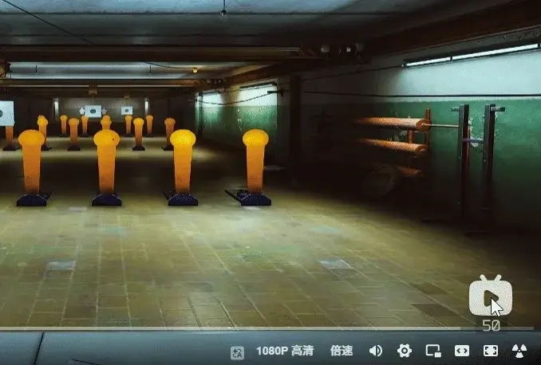

Always Deagle Special Draw
- Downloads
- 956
- Favourites
- 6
- Mod lists
- 14
Always Deagle Special Draw

Always Deagle Special Draw is a lightweight BepInEx client-side plugin that triggers the Desert Eagle’s special spinning draw animation every time you switch to it.
By default, Escape from Tarkov only plays the Desert Eagle’s special draw animation under specific internal conditions. This mod changes that behavior, making the stylish spin animation consistent and predictable: whenever you equip or switch to a Desert Eagle, the special draw animation will play automatically.
What This Mod Does
This mod forces the Desert Eagle to use its special spinning draw animation when the weapon is drawn.
In simple terms:
- Draw the Desert Eagle → special spinning animation plays
- No mastery requirement
The goal of this mod is purely visual and stylistic. It does not add any new weapons, change weapon stats, or rebalance the Desert Eagle.
Features
- Always triggers the Desert Eagle’s special draw animation
- Does not change weapon damage, recoil, ergonomics, durability, ammo, or ballistics
- Designed only to affect the Desert Eagle’s draw behavior
- Includes protection logic for empty-chamber and empty-weapon draw states
- Configurable through the BepInEx config file
Why Use This Mod?
The Desert Eagle has one of the most recognizable and stylish special draw animations in the game, but its original trigger conditions are restrictive and inconsistent.
This mod makes the animation reliable.
If you want the Desert Eagle to look more stylish every time you pull it out, this mod does exactly that.
Installation
Extract the downloaded archive directly into your SPT game root folder.
The final file path should look like this:
BepInEx/plugins/AlwaysDeagleSpecialDraw.dll
For example, if your game is installed at:
D:/SPT/
then the plugin should be located at:
D:/SPT/BepInEx/plugins/AlwaysDeagleSpecialDraw.dll
Configuration Notes
Preserve Empty Chamber Magazine Draw
When the Desert Eagle’s chamber is empty but the installed magazine contains ammo, the original chambering behavior is preserved.
This helps avoid forcing the spin animation in situations where the game should naturally play a chambering-related draw animation.
Preserve Empty Weapon Draw State
When the chamber is empty and there is no positive ammo signal from the magazine, the original empty-weapon animation state is preserved.
This helps protect animation behavior related to slide-lock, empty magazines, and reloading.
Restore Weapon Level After Chambering Delay
Controls how long the plugin waits before restoring the weapon animation level after an empty-chamber draw.
This is mainly used to avoid interfering with later reload animations.
Compatibility
This is a client-side BepInEx plugin.
It is intended to be installed on the game client where you want the Desert Eagle special draw animation behavior to apply.
This mod should not affect server-side progression, inventory, traders, quests, AI, loot, or weapon balancing.
For Fika or co-op setups, install it on the client where the visual draw behavior is needed.
Known Notes
The mod includes safeguards for empty-chamber and empty-weapon states, but animation behavior may still vary depending on weapon state, magazine state, and other animation-related mods.
If you use other mods that patch weapon animations, reload logic, or firearm controller behavior, please test compatibility in your own setup.
Credits
Created for players who want the Desert Eagle to always feel as stylish as it looks.
Version
1.0.1
Fixed the issue where the Desert Eagle would jam when quickly reloading with an empty magazine!